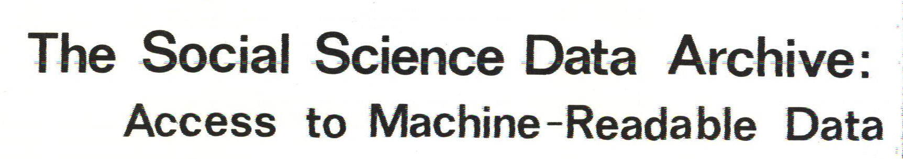
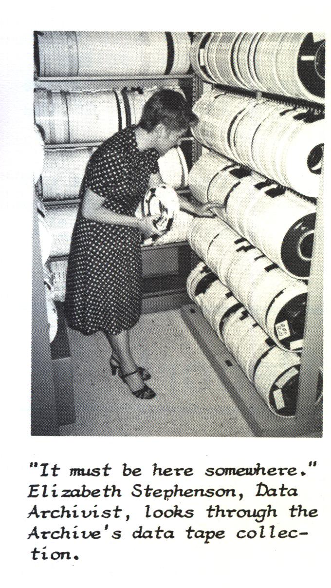
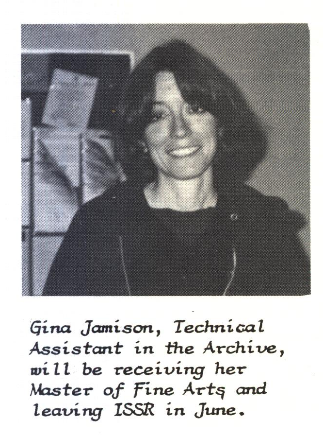
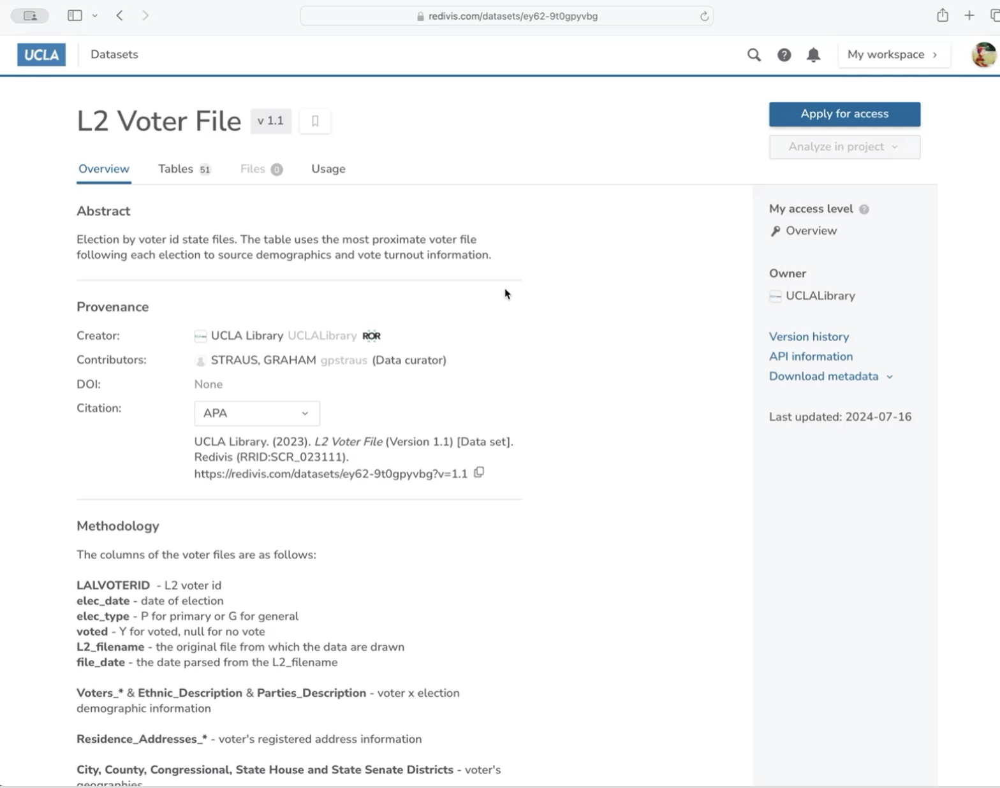
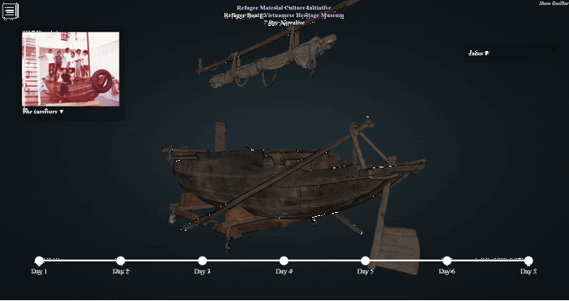
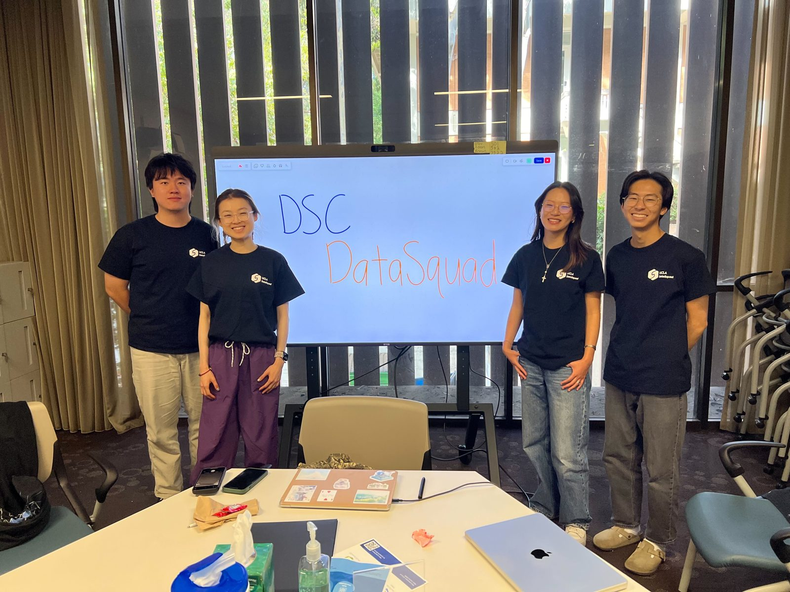
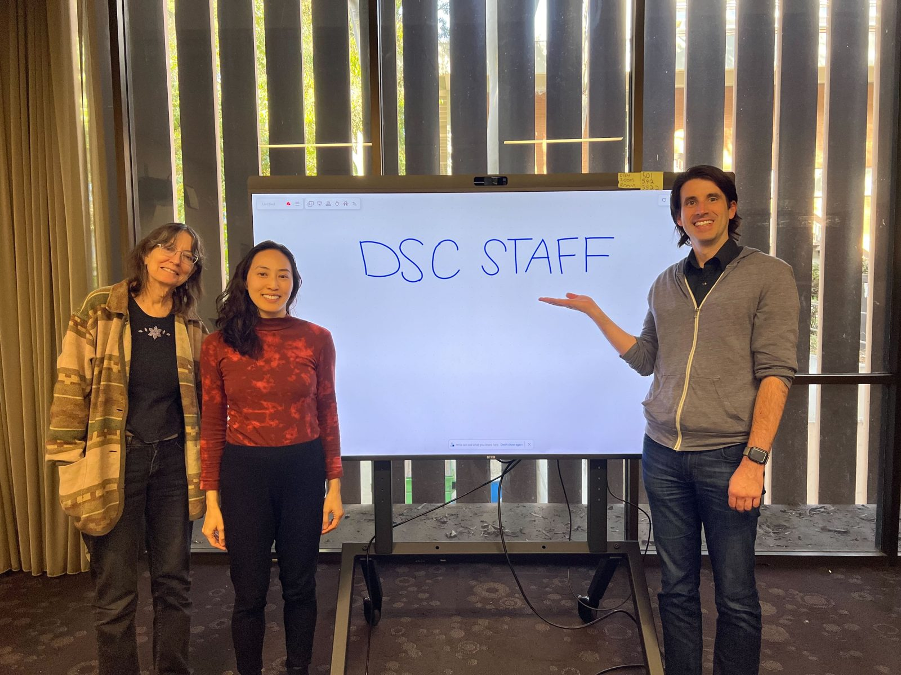

From the Political Behavior Archive to the Data Science Center
An institutional history of UCLA’s social science data archive, 1961–2026
This is the October 2026 version, written from public sources and the author’s records. Where a point rests on the author’s own account, the text says so. Corrections are welcome through the “Report a correction” link in the footer.
The history in 30 seconds
UCLA has kept research data for other researchers to use since 1961, when political scientist Dwaine Marvick started the Political Behavior Archive to share survey data on campus. In 1977 the Institute for Social Science Research (ISSR) named that collection the Social Science Data Archive (SSDA) and gave it staff who helped researchers use it. In 2014 the archive moved to the UCLA Library, and in 2018 it became the core of the Library’s Data Science Center (DSC), which served researchers in any discipline. On August 24, 2026, the Library dissolved the Center as a unit and moved its staff into Research Services.1 The material changed along the way, from punch cards and survey tapes to restricted national datasets, aerial imagery, 3D scans, and scanned pages turned into data. The responsibility for keeping data usable continued: keep that evidence findable, usable, and trustworthy for the next person.
About this account
Tim Dennis, the author, directed the archive and then the Data Science Center from 2017 through 2026, so the recent chapters are a participant’s account. They are held to cited records where those exist, and the notes say where a claim rests on the author’s own account. The full statement is under The author’s position. A companion document holds the full roster, project inventories, chart methods, and open questions.
Two tracks: where the archive lived, and what it stewarded
The top track shows where the archive sat; the bottom track shows dated examples of what it stewarded or offered. Gaps on the bottom track are periods without a firm date, not periods without work.
1961-1964: A political scientist starts a survey data archive
Political scientist Dwaine Marvick joined UCLA’s political science faculty in 19542 and founded the Political Behavior Archive (PBA) in 1961.3 Rice and Southall place the archive in the field’s early cohort: in their table of social-science data libraries and centers, UCLA’s service dates to 1961, ahead of ICPSR itself (1962).45 The PBA distributed survey and behavioral data from ICPR (ICPSR’s original name), the Roper Public Opinion Research Center, and local holdings to UCLA researchers.6 A UC memorial calls Marvick “one of the first advocates and practitioners of computer applications to political data.” No source found so far says why he founded the archive in 1961 in particular, and Heinz Eulau’s detailed 1999 memorial of Marvick never mentions it.7
The next year UCLA was among the founding member institutions of ICPSR. That is confirmed against the primary document: Warren Miller’s August 1962 memo to Rensis Likert lists “University of California at Los Angeles” among the members “as of July 30, 1962.”8 Two details often attached to it are shakier. The archive’s own account says there were eight founding members and that UCLA joined “through [Marvick’s] efforts,” but Miller’s memo lists 21 institutions, and no document found so far gives Marvick a formal role in the founding. His documented ICPSR service begins on its governing board in 1964. The reasoning is in the companion’s open discrepancies.
1964-1974: The archive becomes a reference room in a survey center
The archive’s next home was UCLA’s Survey Research Center (SRC), formed in 1964, which housed an “Archival Data Library” into which the PBA merged.9 Marvick’s August 1967 proposal, “Plans for the Development of a Social Science Archival Data Library in the UCLA Survey Research Center”,10 set out his plan for that library in writing. The proposal is known from Stiles and Stephenson’s citation; the document itself has not turned up yet.
The archive work was already a formal part of the SRC: taking in datasets from the tape-sharing era, keeping their codebooks, and running a reference room where researchers could work out how to use machine-readable data. What did not exist yet was a named unit with its own staff and consulting services. Stiles and Stephenson say the Archival Data Library ran “on a reference-room basis only.” One detail is unresolved: the archive’s own account puts the 1964 SRC “under the direction of Eve Fielder,” but her obituary says she became its first director in 1976.11
The SRC’s main data product in this decade was the Los Angeles Metropolitan Area Surveys (LAMAS): ten waves, 1970–1976, a shared omnibus survey run about twice a year with questions submitted by different researchers.12
The decade’s clearest mark came from outside the archive. Around 1970 the UCLA Library’s Public Affairs Service, under Mary Ryan, bought 1970 census tapes from DUALabs. It was the Library’s first move into numeric data, and it was cited nationally as an early case of a library taking on machine-readable data.13
1974-1977: ISSR names the archive and gives it staff
The Institute for Social Science Research (ISSR) was established in 1974 under founding director Howard E. Freeman, a medical sociologist.14 The SRC and its archival data library came under ISSR, but the date of that transfer is not settled: one research pass puts it in 1976 (see the note on the 1977 date below). In 1977 Associate Director Donald Treiman took the library that had run “on a reference-room basis only,” designed a research-support framework for it (working alongside a project across its whole life cycle, still the archive’s stated mission decades later), and formalized it as a named service unit, the Social Science Data Archive (SSDA), with its own Data Archivist line.15 An OECD international directory dates the “ISSR Data Archive at UCLA” to December 1977.16
So 1977 is when the archive was named and staffed, not when it was founded. The work ran without a break through the PBA and the SRC. Sources that seem to disagree about 1977 are describing different parts of the same change; one open question is whether Treiman’s unit reported to ISSR directly or to the SRC within it (see the companion’s open discrepancies).
1977-2014: The archive becomes a campus data service
From 1977 to 2014 the archive went through three arrangements.17
- ISSR proper, 1977 to the late 2000s. The archive was a service unit of the institute, whose directors were Howard E. Freeman (1974–1981), Marilynn B. Brewer (from about 1983 to 1993), and David O. Sears (1993–2008).
- The Institute for Social Research, about 2009 to 2011. The parent was renamed ISR, with the Data Archive still among its components.
- A standalone SSDA, about 2011 to 2014, listed on its own as a Social Sciences collection. No source records a formal dissolution of the parent institute, and the reporting line up to the 2014 transfer is unresolved.
Around 1980 the flow ran the other way from the rest of this history. When the UCLA Library decided not to buy the 1980 census tapes, ISSR and SSDA took them on, with the support and storage that came with them.18 Numeric-data stewardship moved from the Library to the archive, the reverse of what would happen in 2014.
The recurring survey work carried on throughout, renamed and reshaped: the Southern California Social Survey (SCSS), then the Los Angeles County Social Survey (LACSS), which ran at least 1992–2002 (series detail in the companion’s 1977–2014 section). By the 1990s the archive had become, in its own staff’s words, “the de facto campus-wide data service unit,” serving public health, education, policy studies, law, and management as well as the social science departments.19 A surviving SSDA newsletter from about 1979 names Martin Pawlocki (programmer), Gina Jamison (the same person as DSC staff member Jina “Jamie” Jamison, still on staff as of October 2026), and Shirley Lane, who had come from the UCLA Research Library’s machine-readable 1970 Census project.20



From the archive’s own newsletter, about 1979, as photographed for a 2017 Library staff presentation.
Elizabeth “Libbie” Stephenson is the era’s through-line. ICPSR’s retirement profile dates her UCLA start to about 1977, and she is documented as staff and later Director through the 2014 transfer, retiring in 2016.2122 Her long run of work on bibliographic control, with Sue Dodd’s scholarship, IASSIST, and ICPSR, was early data-citation practice under an older name: making data properly identified and findable. By 2013 SSDA was already testing DDI-Lifecycle, the international standard for describing survey data across its life, and Colectica curation software. The archive also worked across borders on the Intergenerational Stratification and Mobility File, built with Harry Ganzeboom of the Free University in Amsterdam and Donald Treiman, and funded by the Netherlands Organisation for Scientific Research.23
2014-2018: The archive moves to the Library and widens its mandate
The 2014 transfer agreement (effective 2014, executed 2015) moved SSDA from the Social Sciences Division to the UCLA Library. It carried 2.0 FTE with about $245K in permanent funds covering the two positions’ salary and benefits, plus about $29K in separate permanent funds for subscriptions (ICPSR, Roper, UC Berkeley/SDA, Colectica/Algenta). A separate, small foundation gift fund came too: the Data Archive Purchase Fund (fund no. 604970/56972), set up in the Social Sciences division to support the archive. Elizabeth Stephenson and Jina “Jamie” Jamison came across with it.24 Its stated purpose was to “expand access to the archive’s expertise while modernizing its services.” It also carried a consultation clause: if the Library later made “substantial changes to the operations of Social Sciences Data Archives,” it was to meet with the Social Sciences Division and keep faculty access intact.
In April 2017 Tim Dennis was hired as Director of SSDA, succeeding Stephenson.25 That November he presented “Library Data Archive” to UCLA Library staff, already framing 1961 to 2017 as one arc under the tagline “Providing archive and data services since 1961.”26 The team then reworked the unit’s services through a design-thinking exercise that put “the user as the scholar in need of research support” at the center.27 In spring 2018 the unit was restructured and renamed the Data Science Center (DSC), with a mission written to cover any discipline,
to foster a welcoming research community by developing data literacy and foundational coding skills through consulting and education … supporting researchers throughout the full data life cycle: planning and data management plans; acquisition, storage, cleaning and usage; analysis; publication; curation; and preservation.28
SSDA became a named component of it. Todd Grappone, then the Library’s AUL for Digital Initiatives and IT, handled the 2014 transfer, coined the “Data Science Center” name, and helped design the 2018 service model.29
2018–2026: The Data Science Center takes on new kinds of research material
The new name widened the scope; the archive’s work carried on under it. Staff grew from 2.0 FTE (full-time equivalents) at the 2014 transfer to five by about 2021, mostly by redesigning existing Library positions, while the repository, the teaching program, and the kinds of material researchers brought all grew. This chapter follows three changes: the material researchers brought, what DSC built to steward it, and the people and money that kept it running. The author directed the unit throughout, so the chapter rests on cited records; project inventories and career detail are in the companion’s 2018–present detail.
Researchers arrived with material the survey archive was never built for
Survey files still came in. By the early 2020s researchers were also bringing national voter files too large and too restricted to download, drone and aerial imagery, point clouds (millions of measured 3D points that together model an object or a landscape), handwritten tables that no standard text-recognition software could read, and research code with no license. Geography was the largest single departmental audience for DSC workshops from 2020 to April 2024, and DSC ran the campus ArcGIS Online mapping platform, which grew past 7,000 accounts. That ended when the unit’s GIS librarian left for a faculty position in August 2024; the position has not been filled.30
Four cases show how DSC handled that range. Each starts with a stewardship problem and ends with what stayed usable.
The collections kept working, and the curation kept going, under a new name
The legacy SSDA collection lived on Harvard’s hosted Dataverse, a widely used open-source repository for research data, and the archive’s policies, terms, and deposit practice were written for a “Data Archive.” Those policies and deposit procedures stayed in use after the rename. The archive’s policy repository, created in July 2017, was maintained through May 2020, two years after the new name, and in 2018 DSC stood up a UCLA instance of Dataverse. It chose Dataverse for the reasons the archive had chosen it before: support for DDI, the metadata standard for describing survey data; the ability to restrict licensed files; and a range of curation from self-service deposit to fully mediated. DSC connected it to UCLA single sign-on, to DOIs (the persistent identifiers that make a dataset citable), and to preservation through the California Digital Library.31
Rather than migrate the legacy collection immediately, DSC harvested it into the new repository’s search: keep it working first, move it later. Jina “Jamie” Jamison, who came across with the archive in 2014, ran that repository day to day. She wrote the preservation documentation, kept nightly database backups and a tested rebuild script in place, and walked depositors through collections and DOIs.
By 2026 UCLA Dataverse held about 1,390 released datasets: about 376 deposited directly at UCLA and about 1,014 harvested from the legacy SSDA collection. Counting drafts and restricted deposits, the total is about 1,600.32 Reuse is harder to count: some repository records link to related publications, but those links are incomplete and cannot measure total reuse.
The curation continued too, though no longer under the SSDA name. DSC did not publish new studies as the archive; it helped researchers prepare their own data for publication. A two-stage pattern settled in over time. A research group first worked its dataset out and published it in UCLA Dataverse, with DSC helping shape it along the way. Once the data was stable, it could go to ICPSR, which has the staff to curate a dataset down to the level of individual variables and document it for long-term reuse.33 The UCLA Law Behind Bars Data Project, which tracked COVID-19 in prisons, jails, and immigration detention nationally, followed that path: its COVID Prison Policy Index went into UCLA Dataverse in 2022, and ICPSR released a curated version as study 38730 in 2023. Nicholas Shapiro’s Carceral Ecologies lab did the same with its autopsy analysis of deaths in the Los Angeles County jail: published in UCLA Dataverse in May 2023, released by ICPSR as study 38958 in 2024. DSC consultation records show both projects asking DSC about ICPSR deposit along the way, Carceral Ecologies from 2021 and Behind Bars in 2022. The Williams Institute brought its national surveys of LGBT people, among them TransPop, the first national probability sample of transgender adults in the United States, which reached ICPSR with DSC curation support. Terence Keel’s BioCritical Studies Lab publishes its deaths-in-custody data in UCLA Dataverse, including the autopsy data behind Keel’s book The Coroner’s Silence. It is a candidate for the second stage, made harder because the lab’s data is compiled from many sources.
Restricted voter data got a governed place to be analyzed
Some of the most sought-after data could not be handed out at all. A national voter file, or a dataset that merges records protected under FERPA (student privacy) or HIPAA (health privacy), can be used only inside an environment that enforces who sees what. UCLA’s medical enterprise had that through Mednet, its computing environment, which offered HIPAA-level services such as a HIPAA-compliant Box. The rest of campus had no access to Mednet, and outside the medical enterprise UCLA had no equivalent campus-wide service, though individual departments may have had their own arrangements: no shared, governed way to give a social science student a voter file, and, in the author’s account, no secure place outside medicine to merge restricted data at scale.34
DSC selected and licensed Redivis, a platform for analyzing restricted data in place, took it through UCLA’s security and third-party risk review (protection levels P3 and P4, the two highest in UC’s data classification), negotiated access to the restricted datasets, piloted it in 2022, and launched the governed service in January 2023. It set up 50 seats with data-use-agreement controls, so that routine requests would not wait on one person.35
The main case is the L2 historic voter file, more than 10 TB of national voter history bought through the archive’s gift fund. It arrived as thousands of fragmented state-level files, too large to store locally and too inconsistent to analyze. DSC assembled it into one version-controlled national dataset, published with its own DOI (UCLA Library, L2 Voter History and Demographic Dataset, 2023, doi:10.60603/D37P4R) and presented at FORCE11 2024 by Redivis’s CEO and Graham Straus, the doctoral student who curated it. Straus put the stewardship point plainly: “What happens when I leave UCLA? Will people know how the dataset was constructed? Yes!”

Researchers in several departments use it, on election administration, gentrification, Latino voting, and health and voting. Processing recorded on UCLA’s Redivis platform as a whole grew from 444 GB in its first year to 2.9 PB (petabytes) in 2024. That measures computation across the platform, not storage and not the voter file alone; the data held is about 20 TB. The scholarship belongs to the researchers. DSC supplied the environment, the agreements, and the curated dataset.
OCR turned scanned pages into data
A great deal of research evidence sits in scanned images that no one can search or count: handwritten tables, printed statistical series, text in scripts ordinary OCR (optical character recognition, the software that turns an image of a page into text) reads badly. Getting usable text out of them is the old archival job of making a source accessible, applied to a new kind of source.
The projects came from researchers. For scanned Japanese documents about atomic-bomb survivors, the team compared six tools to find one that could read dense historical Japanese. Handwritten nineteenth-century German tables for a History professor, and handwritten German memoirs for a Sociology professor, defeated standard OCR and needed a different route. The 1976 Iranian National Census sat locked in scanned PDFs. Leigh Phan, DSC’s data scientist, led the work. A DataSquad student, Lukas Hager, built the core pipeline those projects shared. By 2026 the team had a triage tool that runs a fast baseline engine and a stronger AI model side by side and recommends the cheapest defensible route to usable text for a given collection. The work above was mostly evaluation and pipeline building. Which projects delivered finished transcriptions, and which led to published research, is still being documented.36 Where it could, DSC ran open models on its own hardware, so sensitive material did not leave UCLA and researchers were not tied to a commercial service to read their own sources.
3D capture needed a way for others to open the results
In 2018 DSC named three areas to grow into as it added staff: GIS, augmented and virtual reality, and machine learning.37 The second came through Doug Daniels, who had joined the Library in 2013 on the help desk, built its first 3D printing service, and from 2016 ran the Lux Lab, the Library’s space for 3D printing, scanning, and VR. He joined DSC as Emerging Technologies Librarian in April 2020.38 He scanned objects for partners across campus and beyond, from Egyptian artifacts at the Getty and the Museo Egizio in Turin with the Cotsen Institute to cadaver-arm dissections for the Anatomy Lab, now taught in History of Medicine, and in 2023 DSC added a drone kit with LiDAR (laser-ranging) and photogrammetry payloads for landscape-scale surveys.
Capture made a new stewardship problem. A point cloud from a survey is usually too large to open as a single file in a browser or to hand out from a download page. DSC’s answer was pointcloud.ucla.edu, a server Daniels built in 2022 on the open-source Potree viewer, which streams large point clouds so anyone can explore them in an ordinary web browser.
One publicly documented result is the Refugee Material Culture Initiative. With Classics professor Kelly Nguyen and the Vietnamese Heritage Museum, Daniels 3D scanned the “Boat of Hope,” a six-meter river sampan that carried nine refugees out of Vietnam in 1984, and prepared the models for the museum’s digital exhibit, a public seven-day narrative of one family’s escape by sea. DataSquad student Bianca Badajos helped set up the Potree viewer that hosts it.

Daniels was named a UCLA Librarian of the Year for 2026, one of two given university-wide by LAUC-LA.39 His standards work, chairing the UC 3D Data Common Knowledge Group and co-chairing the international IIIF 3D Community Group, tied the service to how other institutions preserve 3D data. The full project list is in the companion’s Daniels inventory.
Teaching spread the skills further than a small staff could reach
With two staff and tens of thousands of potential learners, the unit joined The Carpentries in 2017, a nonprofit that trains volunteer instructors to teach foundational coding and data skills, and used the membership to build an instructor community rather than hire one. Tim founded UCLA Carpentries in 2018. By the two January 2020 workshops, campus volunteers trained through the program were leading the teaching and DSC staff were mostly helping. COVID then made in-person cross-campus training impossible and virtual coordination cheap, and in 2020 Tim co-founded the systemwide UC Carpentries network with Berkeley, San Diego, Santa Barbara, Merced, and Riverside. The joint series recorded 1,036 attended seats in 2024 and 637 in 2025 across UCLA and partner campuses (seats are counted per session, not per person; definitions are on the evidence site’s Instruction page).
Every member of the DSC team trained as a Carpentries instructor, and by 2021 six of the program’s 13 new instructors came from technical roles elsewhere in the Library. Teaching gave those staff a reason to share what they knew, and gave DSC instructors it could never have hired.40 GIS was among the largest topics throughout; qualitative and text data, data management plans, and later machine learning followed demand.
Consulting widened the same way. From 2023 through 2025 DSC recorded 785 scheduled consultations, 156 service-desk tickets, and 234 tracked project tasks. The categories describe different kinds of work and should be read separately. Over those years the work shifted from single appointments toward project support that ran for months.41 An IMLS grant (RE-252335-OLS-22, $237,839, Tim as Project Director)42 treated course material as a citable research output: 15 peer-reviewed open-science lessons, each with a DOI and contributor credits, built by 27 authors. Tim’s own Carpentries, open-science, and open-source leadership is in the companion’s 2018–present detail.
Staff never grew in proportion; students and redesigned jobs filled the gap
Between January 2020 and February 2026, datasets deposited directly in UCLA Dataverse went from 9 to about 376. Staff grew far less, and mostly from redesigning existing Library positions: a geospatial librarian rebuilt as a Spatial Data Science Librarian (Zhiyuan Yao), a Library IT data manager rebuilt as a Data Science Facilitator, and a Digital Library programmer with a machine-learning background recruited across divisions at half time (Kristian Allen, 2018–2024).43 Some capacity was simply lost: when the GIS librarian left for a faculty position in August 2024, the position went unfilled, with the demand still there.
Students made up much of the difference. DataSquad borrowed its model from a student-staffed data consulting program at Carleton College.44 UCLA’s version began in 2020 on a Norman Powell gift, became a formal program in 2021, and in 2024 absorbed the Lux Lab’s student line. Students handled 190 of the unit’s scheduled consultations from 2023 to 2025, about a quarter, then moved toward long project work. For Carceral Ecologies, Nicholas Shapiro’s lab, Lawrence Lee and Madeline Kim rebuilt the pipeline for helicopter-surveillance flight data so that one measured data-loading step that had taken about 318 minutes ran in about two. For Terence Keel’s BioCritical Studies Lab, Julia Wood, Ethan Allavarpu, Tristan Dewing, and Lee cleaned and restructured a national deaths-in-custody dataset and built tools the lab could maintain on its own.

DSC documented post-graduation destinations for ten DataSquad students from 2023 to 2025. All ten entered data or technical roles. This is a tracked group, not an outcome rate for every student in the program.
Norman Powell’s philanthropy paid for much of the expansion: a data-scientist position, a deep-learning workstation and DSC space in the Young Research Library, about two years of AWS costs after DSC got its own AWS account, and DataSquad’s seed funding, all separate from his December 2016 gift endowing the University Librarian position. The people who carried the work were Jamie Jamison (repository and curation), Doug Daniels (3D and emerging technology), Leigh Phan (programmer, then data scientist), Zhiyuan Yao (spatial data science, until 2024), Kristian Allen (software and machine learning, 2018–2024), a data-science facilitator, and the rotating DataSquad students. The full roster is in the companion.

Paying for the systems, and for the data
The repository and several shared platforms relied on cloud services. UCLA Dataverse runs on Amazon Web Services, with about 5.4 TiB of files, counting replication, as of May 2025; the point-cloud service has its own AWS server; Redivis is licensed. Dataverse first ran under the Library IT division’s AWS account. When campus broke up its shared AWS arrangement and DSC got its own account, the cost landed on DSC. Powell infrastructure funds covered it for about two years, and after that it came out of the archive’s operating fund.
That operating fund, the one the 2014 transfer set up, paid the recurring costs: the ICPSR and Roper memberships, AWS, and Redivis, which University Librarian discretionary funds had backed for its first two years. Those costs grew. ICPSR and Roper moved to higher pricing tiers, and cloud costs rose with the repository; two small subscriptions, SDA and Colectica, were dropped along the way. The Library added money to the fund over time to cover the difference, and that is a large part of how the Library paid for DSC’s growth.
The gift fund did a different job. The Data Archive Purchase Fund bought data for UCLA researchers: the L2 national voter file, the LARIAC aerial imagery, and four large English corpora (the Corpus of Contemporary American English, the Corpus of Historical American English, News on the Web, and the Coronavirus Corpus), which sit in UCLA Dataverse under a license that limits them to UCLA faculty and graduate students.45 By 2025 DSC had also begun rebuilding the Dataverse service as code, so it could be recreated and upgraded; that rebuild was not finished where this history stops.
August 2026: the unit is dissolved
On August 24, 2026, the Library dissolved the Data Science Center as a unit and moved its staff into Research Services. The Library says “the expertise available and services offered remain the same” and that services will be evaluated through the coming year. It has announced two changes: drone lending ends in fall 2026, and DataSquad will no longer run as a coordinated program.46 The period covered ends August 31, 2026. The only later event recorded here is that on October 5, 2026, the Library posted a new Mercator Geospatial Information and Maps Librarian position, which is a recruitment and not a filled position. This history does not assess the Library’s restructure proposal, which its author has not seen.
Evidence of use: what can and cannot be counted
Two kinds of evidence appear here, and they answer different questions. For the older surveys, the question is what survives and whether anyone cited it. For the recent work, it is what DSC contributed to research that others produced.
Older survey data: what survives and what was cited
The chart below counts the 571 SSDA datasets still in the Harvard Dataverse collection by the survey year in each title. It shows which decades today’s surviving collection represents. It does not show when the archive acquired, described, or worked on those datasets, or how busy the archive was in a given decade: a survey fielded in the 1970s may have arrived years later, and the counts reflect what survived and was described well enough to date. About two-thirds of all 571 (374) come from surveys fielded between the 1970s and the 1990s.
Citations answer a different question: which of that data shows up in published research, and what it was used for. These surveys were used well beyond their first purpose, and decades after they were collected. The table lists documented uses that could be verified from the publications themselves. It is a set of examples, not a count. It shows that researchers used these surveys, not that the Archive supplied the data to these particular authors.
| Survey series | Documented research use |
|---|---|
| Los Angeles Metropolitan Area Surveys (LAMAS), 1970–1976, ten waves | Edward Bixler and colleagues’ 1979 study of sleep disorders, using five sleep questions added to the 1973 wave, regarded as the first rigorous study in sleep epidemiology;47 Andrew Cherlin and Leo Reeder’s 1975 review of psychological well-being measures, reporting scale reliabilities from LAMAS V and VI;48 and the 1973 California Steam Bus Project’s report on community attitudes toward air pollution and steam-powered buses, which drew on LAMAS II and III (October–November 1970 and March–April 1971)49 |
| Southern California Social Survey (SCSS), through 1991 | Christof Nägel and Amy Nivette’s 2023 reanalysis of 1991 and 1992 survey data on confidence in the police; the 1991 survey is preserved on Harvard Dataverse;50 Melvin Oliver’s study of urban social networks using the 1986 survey;51 and Belinda Tucker and Claudia Mitchell-Kernan’s work on marriage and well-being among African American, Latina, and White women, using the 1989 survey52 |
| Los Angeles County Social Survey (LACSS), 1992–2002 | Lawrence Bobo and Vincent Hutchings’s 1996 study of perceived racial group competition and Bobo and Camille Zubrinsky’s 1996 study of attitudes on residential integration, both using the 1992 survey;53 Gershon and Pantoja’s 2011 study of English-only attitudes, pooling the 1997 and 1998 waves; Zambrana and colleagues’ 2021 review of Latina/o data sets; Gutierrez’s 2025 study of group consciousness in California, using the 1994 survey54 |
Where these surveys can be traced, they were still being used decades later, in work on sleep, racial attitudes, language policy, and policing. A search of ICPSR’s Bibliography of Data-related Literature, by study number, on August 9, 2026 found three publications for LACSS and none for LAMAS, and SCSS is not in that index. That search understates use. Absence from an index does not mean a series went unused, especially for surveys from the 1970s, which predate modern data-citation norms. The search method is in the companion’s chart methods.
Selected contemporary work and its evidence
What the post-2018 infrastructure carried. The middle column is the researchers’ work; the right-hand column says what connects DSC to it, and how firm that connection is.
| DSC contribution | Research or public output | Basis for the connection |
|---|---|---|
| Licensed Redivis, ran the compliance review, and curated the L2 national voter file | Research across several departments using L2 voter data | The UCLA Redivis dataset DOI (doi:10.60603/D37P4R) and FORCE11 2024 presentation document DSC’s curated version; DSC records list related publications, but use of that specific version has not been verified paper by paper |
| Led an IMLS open-science grant (Tim as Project Director) | 15 peer-reviewed open-science lessons, each with a DOI | Federal award record (RE-252335-OLS-22) and the public lesson repositories |
| DataSquad and DSC support for Carceral Ecologies (Nicholas Shapiro): a rebuilt processing pipeline for helicopter-surveillance data, a hosted R server, and ICPSR deposit advice | The lab’s research on police helicopter surveillance, covered by the LA Times, The New Yorker, and Bloomberg | Shapiro’s own account of DSC’s role and DSC project and consultation records; the lab’s autopsy dataset on UCLA Dataverse (2023) and ICPSR (study 38958, 2024), which documents hosting and deposit support, not the pipeline; the press covered the lab’s research, not DSC |
| DataSquad data integration, analysis, and visualization for the BioCritical Studies Lab (Terence Keel), and a lab collection on UCLA Dataverse | The lab’s deaths-in-custody datasets, published on UCLA Dataverse (2025), including the autopsy data behind The Coroner’s Silence; the lab’s research was recognized in UCLA’s 2024 Public Impact Research Awards | Public Dataverse DOIs (e.g., doi:10.25346/S6R7CHCI) and DSC project records; the award recognizes the lab’s research |
| Daniels’s 3D scan of the “Boat of Hope” for the Refugee Material Culture Initiative (Kelly Nguyen) | The Vietnamese Heritage Museum’s public 3D narrative, hosted on pointcloud.ucla.edu | The public narrative on DSC’s server; the initiative’s page on Daniels |
| DataSquad student program | Ten graduates with documented destinations, 2023–2025, all in data or technical roles (a tracked group, not a program-wide rate) | DSC’s own tracking of graduate outcomes |
What the record shows about continuity
Since 1961 someone at UCLA has been responsible for research data after the study that produced it ended. Five institutional homes held that responsibility in turn: a faculty archive, a survey center, a research institute, a standalone archive in the Social Sciences division, and the Library. Four kinds of things traveled with it.
- Collections and documentation. The Los Angeles surveys of the 1970s through the 2000s, with their codebooks, went from tape to Harvard’s Dataverse and are searchable through UCLA’s own repository.
- Relationships. UCLA was a founding member of ICPSR in 1962, and the archive still held the ICPSR and Roper Center subscriptions for the campus when it moved to the Library in 2014.
- Working knowledge. How a dataset was built and what a variable meant in 1974 lived largely in people. Jamie Jamison is named in an archive newsletter from about 1979 and still runs the repository as of October 2026, having come across with the archive in 2014.
- Obligations. The 2014 transfer agreement provides that if there are substantial changes to the archive’s operations within the Library, the Library and the Social Sciences Division “should meet to discuss and ensure the continuation of College faculty’s access to the services provided by Social Sciences Data Archives.”
The lineage shows continuity of function. Gaps in positions, agreements, and services are recorded in the companion. The material changed most over the decades. Survey files needed codebooks and a reference room, restricted national data needed a governed computing environment, and a browser viewer lowered the barrier to using point clouds. Handwritten tables were hard to analyze without OCR.
Some of these duties were nearly dropped. Around 1980 the Library declined the 1980 census tapes and the archive took them on. After 2024 the campus ArcGIS platform was left without an assigned administrator. A restricted dataset can be used while its agreement is administered, and a repository’s identifiers resolve while someone maintains them. When stewardship changes hands, the collections, agreements, systems, and working knowledge need to move together. Otherwise the files may survive without the context that made them usable.
Methods and limitations
How the evidence is handled
The author also wrote documents, including a grant proposal and material responding to the reorganization, that use some of the same facts to make a case. To keep this history apart from them:
- Documents that cite this history are not independent corroboration of claims that trace back to the same author. Facts are checked against a private register of claims that records what is verified, disputed, or self-reported.
- Discontinuities, gaps, and contested points are stated as such. See the companion’s open discrepancies and open questions.
- Some 2018-present detail was first found in internal review documents. A claim appears only where independent corroboration exists (press coverage, award records, publication venues, grant award pages) or where it is marked as self-reported.
- Contemporary impact claims follow the Research Enabled by DSC site’s claim register, which records the approved wording and what is not approved for each case.
Where the full record is
The companion holds the full roster, the 1977–2014 detail, the 2018–present detail, the Daniels project inventory, the Powell gifts, the chart methods, the open discrepancies, and the open questions.
Sources
Numbered notes appear at the first citation of each source.
The full evidence base, with per-claim detail and verification status, is held in the author’s private working files. Published sources are listed above; the research site’s claim register records the approved wording and source for figures the two sites share.
Footnotes
Library management announcement, August 20, 2026, and Library statements to staff, July to September 2026 (available on request); UCLA Library, restructure overview, https://www.library.ucla.edu/about/restructure-overview/ (accessed October 5, 2026); UCLA Library, Mercator Geospatial Information and Maps Librarian, job posting JPF11374, https://recruit.apo.ucla.edu/JPF11374 (accessed October 5, 2026).↩︎
University of California Academic Senate, Dwaine Marvick, n.d., https://senate.universityofcalifornia.edu/_files/inmemoriam/html/dwainemarvick.htm.↩︎
Jon Stiles and Libby Stephenson, “Disappearing Disciplinary Borders in the Social Sciences: Data Acquisition – Access – Management,” IFLA Social Science Libraries Section Satellite Conference (University of Toronto), August 2008.↩︎
R. Rice and J. Southall, “Data Librarianship: Responding to Research Innovation,” in The Data Librarian’s Handbook (Facet, 2016), https://doi.org/10.29085/9781783301836.002.↩︎
The table lists Roper (1957), Berkeley (1958), and GESIS (1960) before UCLA. It mixes data libraries and data centers, and some dates may mark a different milestone than founding: the Roper Center gives 1947 as its own founding year, and the German date belongs to the Central Archive, not to today’s GESIS.↩︎
Stiles and Stephenson, “Disappearing Disciplinary Borders in the Social Sciences”.↩︎
Heinz Eulau, “Good-bye to Two Dear Friends: Warren Miller and Dwaine Marvick, A Personal Memoir,” 1999.↩︎
Warren E. Miller, memo to Rensis Likert, August 1962, listing member institutions as of July 30, 1962, a primary document rather than a later description of it. Cross-checked against Erik Austin’s ICPSR founding-members list. The “8 members” and “through his efforts” phrasing is from the SSDA collection’s “About” page on Harvard’s Dataverse, written by Stephenson.↩︎
Stiles and Stephenson, “Disappearing Disciplinary Borders in the Social Sciences”.↩︎
Dwaine Marvick, Plans for the Development of a Social Science Archival Data Library in the UCLA Survey Research Center, 1967.↩︎
The “1964, under Eve Fielder” claim comes from the archive’s own Dataverse-page text, written by Stephenson, and is repeated in 2017 internal presentations. The conflicting obituary date turned up in a July 2026 research pass through published sources. See the companion’s open discrepancies.↩︎
Stiles and Stephenson, “Disappearing Disciplinary Borders in the Social Sciences”; Martin Pawlocki and Elizabeth Stephenson, “A Micro Based Tape Information System,” IASSIST Quarterly, 1988, 25–40.↩︎
Judith Rowe and Mary Ryan, “Library Service from Numerical Data Bases: The 1970 Census as a Paradigm,” College & Research Libraries 35 (1974): 7–15; Sue A. Dodd, “Toward Integration of Catalog Records on Social Science Machine-Readable Data Files into Existing Bibliographic Utilities: A Commentary,” Library Trends 30, no. 3 (1982): 335–61.↩︎
Stiles and Stephenson, “Disappearing Disciplinary Borders in the Social Sciences”.↩︎
Stiles and Stephenson, “Disappearing Disciplinary Borders in the Social Sciences”; Pawlocki and Stephenson, “A Micro Based Tape Information System”.↩︎
Social Sciences for a Digital World (OECD, 2000), an international directory that dates the ISSR Data Archive at UCLA to December 1977. The same July 2026 research pass also separates a 1976 step, the SRC being taken into ISSR, from the December 1977 step, SSDA being formally established as a named unit.↩︎
The three-subperiod structure rests on the digitized UCLA General Catalogs (2003–05, 2005–07, 2009–10, 2010–11, 2011–12, 2013–14), read in a July 2026 research pass. Sears’s 1993–2008 ISSR directorship is independently confirmed. Freeman’s and Brewer’s exact terms, and the date of the ISSR-to-ISR rename, are still soft; operational staff named in that pass are listed in the companion’s roster.↩︎
Stiles and Stephenson, “Disappearing Disciplinary Borders in the Social Sciences”.↩︎
Stiles and Stephenson, “Disappearing Disciplinary Borders in the Social Sciences”.↩︎
Photographed excerpts of an SSDA newsletter from about 1979, embedded in a 2017 internal Library presentation. Jamie Jamison confirmed to Tim directly that “Gina Jamison” is her.↩︎
Pawlocki and Stephenson, “A Micro Based Tape Information System”; Libbie Stephenson, “Social Science Data Files and Bibliographic Control: Contributions of Sue A. Dodd,” IASSIST Quarterly, 2013; Jennifer Doty et al., “Learning to Curate,” Bulletin of the Association for Information Science and Technology 40, no. 6 (2014): 31–34.↩︎
ICPSRs own materials, including its retirement profile, put her retirement in 2016 rather than 2014 and date her UCLA start to about 1977; Pawlocki and Stephenson’s 1988 IASSIST article independently documents her as staff by 1986.↩︎
Stiles and Stephenson, “Disappearing Disciplinary Borders in the Social Sciences”.↩︎
University of California, Los Angeles, Social Sciences Data Archives-to-Library MOU, 2014.↩︎
Tim Dennis, personal account, 2026-08-09.↩︎
Tim Dennis et al., “From a Data Archive to Data Science: Supporting Current Research,” in Data Science in the Library: Tools and Strategies for Supporting Data-Driven Research and Instruction, ed. J. Herndon (Facet, 2021).↩︎
Tim Dennis, personal account. Grappone’s role in the 2014 transfer and the 2018 naming is not in any public source; it rests on the author’s account as a participant. Grappone became University Librarian at UC Santa Barbara in July 2025.↩︎
GIS workshop and consultation figures and the ArcGIS account totals: DSC statistics and Tim Dennis’s Data Summary, 2023–2025, cross-checked against an OARC governance report (Dec 2025). The fuller spatial-data account is in the companion’s 2018–present detail.↩︎
The two totals answer different questions. About 376 datasets were deposited directly at UCLA and about 1,014 legacy SSDA datasets were harvested in and curated by Library staff, which is roughly 1,390 released; 1,603 counts drafts and restricted deposits. UCLA’s dashboard figure for the directly deposited slice was about 377 in August 2026. The 571 datasets in the chart under Evidence of use are a third scope, the historical sub-collection still on Harvard’s Dataverse. Repository defense, reuse tracing, and hosted-collection detail are in the companion’s 2018–present detail.↩︎
Author’s account, 2026-09-27; a full list of curated deposits is being compiled with Jamie Jamison (companion, open questions). The two-stage pattern and the reason for it (ICPSR’s variable-level curation) are the author’s account. Public records: the Behind Bars collection on UCLA Dataverse (created 2022-01-28), including the COVID Prison Policy Index (doi:10.25346/S6/B5GOLX), and ICPSR’s curated release, COVID Behind Bars: COVID Prison Policy Index, United States, 2020–2021 (ICPSR 38730, 2023, doi:10.3886/ICPSR38730.v1); the Carceral Ecologies collection’s Autopsy Analysis of Deaths in LA County Jail, 2009–2018 (2023, doi:10.25346/S6/JOOUYM) and ICPSR’s release of it (ICPSR 38958, 2024, doi:10.3886/ICPSR38958.v1); the BioCritical Studies Lab collection, with LA County In-Custody Death Data, 2008–2019 (2025, doi:10.25346/S627C42Q), National List of Lost Lives (2025, doi:10.25346/S65RWE6N), and Autopsies from The Coroner’s Silence (2025, doi:10.25346/S6R7CHCI); DSC scheduling records (LibInsight/Calendly exports, 2021–2022) for the ICPSR consultations; the Williams Institute studies at ICPSR (37938, 37166, 38421, 37877). The ICPSR deposits are the Williams Institute’s; DSC’s curation role there rests on the author’s account. Hosted-collection detail is in the companion’s data hosted section.↩︎
Tim Dennis, author’s account, 2026-09-27. The claim is limited to campus-wide services outside the medical enterprise; it does not cover departmental arrangements.↩︎
Platform and governance detail: Tim Dennis, Statement of Professional Achievements and Data Summary, 2023–2025, self-reported. The DOI, the FORCE11 presentation (Mathews & Straus 2024, doi:10.5281/zenodo.13181256), and the publication venues are the independently checkable parts. Launch: piloted 2022, governed service launched January 2023 (confirmed by Tim 2026-09-02; reconciles the July-2022 / January-2023 sources).↩︎
Project descriptions from DSC’s own materials (the DataSquad project portfolio and a 2026 Powell Society presentation) and the
dsc-ocr-triagerepository (2026). When the OCR work began, and what each project produced, are still being documented; see the companion’s open questions. Phan’s career, the machine-learning workstation, and the text-analysis teaching line are in the companion’s 2018–present detail.↩︎UCLA Library, Doug Daniels, Staff profile, n.d., https://www.library.ucla.edu/about/staff/doug-daniels/.↩︎
UCLA Newsroom, Doug Daniels, Matthew Vest: UCLA Librarians of the Year 2026, 2026, https://newsroom.ucla.edu/stories/doug-daniels-matthew-vest--ucla-librarians-of-the-year-2026.↩︎
785 scheduled consultations, 156 service-desk tickets, and 234 tracked project tasks (Trello cards), from LibInsight, Jira, and Trello exports compiled for a 2025–26 review. Each count is conservative, since not every interaction was logged, and the three are not added together because one project can span many consultations and tasks.↩︎
Institute of Museum and Library Services, RE-252335-OLS-22: Lessons for Librarians in Open Science Principles and Methods, Grant award record, 2022, https://www.imls.gov/grants/awarded/re-252335-ols-22.↩︎
Dennis et al. 2021 (Dennis et al., “From a Data Archive to Data Science”) describes the redesign-not-hire staffing model. The specific position histories rest partly on the author’s account; exact titles and dates for some positions are still being confirmed (companion, open questions).↩︎
Paula Lackie, Responding to Data Support Challenges with a Student ’DataSquad’, IASSIST 2019: Data Down Under, Sydney, Australia, 2019, https://doi.org/10.5281/zenodo.3620820.↩︎
The division between the two funds, the Library’s added contributions, the Powell and University Librarian bridge funding, and the dropped subscriptions are the author’s firsthand account as the unit’s director; the gift fund’s name and number are from the 2014 transfer agreement (University of California, Los Angeles, Social Sciences Data Archives-to-Library MOU). The years of Powell’s AWS coverage and the amounts the Library added have not yet been reconstructed from transaction records. An earlier draft of this history said the subscriptions were moved off the gift fund to free it for cloud costs. That was wrong and was corrected on 2026-09-28. The corpora are listed in UCLA Dataverse (for example doi:10.25346/S6/Z36KRR for COCA).↩︎
Library management announcement, August 20, 2026, and Library statements to staff, July to September 2026 (available on request); UCLA Library, restructure overview, https://www.library.ucla.edu/about/restructure-overview/ (accessed October 5, 2026); UCLA Library, Mercator Geospatial Information and Maps Librarian, job posting JPF11374, https://recruit.apo.ucla.edu/JPF11374 (accessed October 5, 2026).↩︎
Edward O. Bixler et al., “Prevalence of Sleep Disorders in the Los Angeles Metropolitan Area,” American Journal of Psychiatry 136, no. 10 (1979): 1257–62, https://doi.org/10.1176/ajp.136.10.1257; Julio Fernandez-Mendoza et al., “Edward O. Bixler, PhD: From the Apollo Project and Chimpanzees to Sleep Epidemiology,” Sleep Advances 5, no. 1 (2024), https://doi.org/10.1093/sleepadvances/zpae020.↩︎
Andrew Cherlin and Leo G. Reeder, “The Dimensions of Psychological Well-Being: A Critical Review,” Sociological Methods & Research 4, no. 2 (1975): 189–214, https://doi.org/10.1177/004912417500400203.↩︎
Assembly Office of Research, California Legislature, California Steam Bus Project: Project Report on Community Attitude Surveys, Phase I (Assembly Office of Research, 1973), https://libraryarchives.metro.net/dpgtl/steambus/1973-california-steam-bus-project-report-community-attitude-surveys-phase-1.pdf.↩︎
Christof Nägel and Amy Nivette, “The Rodney King Incident and Verdict Revisited: Examining Opinion-Mobilizing Effects Using Data from Southern California in 1991 and 1992,” Journal of Criminal Justice 85 (2023): 101989, https://doi.org/10.1016/j.jcrimjus.2022.101989; University of California, Los Angeles, Institute for Social Science Research, Southern California Social Survey, 1991, Harvard Dataverse, 1993, https://doi.org/10.7910/DVN/JH9UXH.↩︎
Melvin L. Oliver, “Urban Social Networks in Los Angeles: Evidence from the 1986 SCSS,” Connections 11, no. 1 (1988): 17–20.↩︎
M. Belinda Tucker and Claudia Mitchell-Kernan, “The Decline of Marriage Among African Americans: Attitudinal Dimensions,” Paper Presented at the 97th Annual Convention of the American Psychological Association (New Orleans), 1989; M. Belinda Tucker and Claudia Mitchell-Kernan, “Psychological Well-Being and Perceived Marital Opportunity Among Single African American, Latina, and White Women,” Journal of Comparative Family Studies 29, no. 1 (1998): 57–70, https://doi.org/10.3138/jcfs.29.1.57.↩︎
Lawrence Bobo and Vincent L. Hutchings, “Perceptions of Racial Group Competition: Extending Blumer’s Theory of Group Position to a Multiracial Social Context,” American Sociological Review 61, no. 6 (1996): 951–72, https://doi.org/10.2307/2096302; Lawrence Bobo and Camille L. Zubrinsky, “Attitudes on Residential Integration: Perceived Status Differences, Mere in-Group Preference, or Racial Prejudice?” Social Forces 74, no. 3 (1996): 883–909, https://doi.org/10.2307/2580385.↩︎
Sarah Allen Gershon and Adrian D. Pantoja, “Patriotism and Language Loyalties: Comparing Latino and Anglo Attitudes Toward English-Only Legislation,” Ethnic and Racial Studies 34, no. 9 (2011): 1522–42; Ruth E. Zambrana et al., “Analysis of Latina/o Sociodemographic and Health Data Sets in the United States from 1960 to 2019,” Health Education & Behavior 48, no. 3 (2021): 320–31; Angela Gutierrez, “Latino Tu Latino Yo: Group Threat and Group Consciousness in California,” Political Research Quarterly 78, no. 1 (2025): 264–76.↩︎